概述
本讲介绍cache的剩余内容、memory访问方式等，结束存储器部分的学习。
（一）处理写操作
从体系结构角度看，缓存写操作的核心问题是维护各层副本的一致性。下面介绍常见写策略。
1.write through（写穿透、写直达）
保持cache和Memory一致最简单的策略就是一起写。当发生写失效时（cache中没有要写的地址），先从memory中取出对应数据块的内容，送到cache中，然后写入这个cache，再将cache送回到Memory。
可以看到上述设计方案的效率存在问题，基于write through，每次写操作都要操作Memory，会造成100个周期的延时，大大降低了处理器的性能。
针对这个问题，可以使用写缓冲（write buffer）解决。写缓冲中保存着等待写回主存的数据，写入cache的同时也写入写缓冲中，这样处理器可以继续运行，write buffer -> Memory的操作可以与处理器执行指令并行。
当write buffer占满时，处理器被迫停止。增多write buffer的表项可以降低其溢出的风险，当写回Memory的操作结束时，可以释放这一表项。
处理写失效有两种策略，写分配策略正如上述那样，对Memory中的数据分配对应的cache块，对cache和Memory都执行写操作；但是写不分配策略直接修改Memory，不将其取回cache中。该策略的动机是：有时候程序需要写整个数据块（例如操作系统对某一页内存进行初始操作全部写0），这时将内存块取入cache是不必要的。有些处理器允许以页为粒度修改写策略。
2.write-back（写回）
当发生写操作时，新值只写入cache中，等到这个cache块被替换时，才会写回Memory。在缓存块驻留期间，处理器可直接读取缓存中的最新数据，无需立即写回主存。write buffer在写回中当然也适用。这种方法比写穿透更加高效。
（二）评估cache性能
CPU时间可以被分成CPU执行程序的时间和等待访存的时间。等待访存的时间大多来源于cache miss（对我们简单分析来说是这样），由于访存造成的时间阻塞可以计算为：
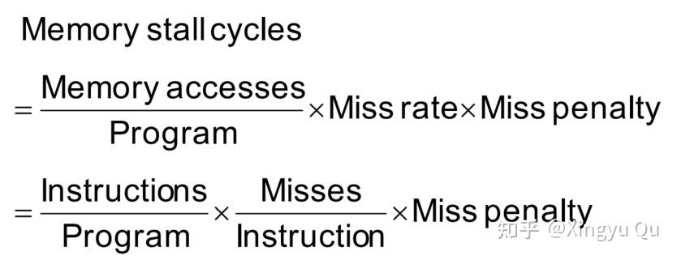
在大多数写穿透cache的结构中，读和写的失效代价是相同的（都是将数据块从内存读至cache）的时间，在写缓冲时间不计的条件下，可以用失效率和失效代价同时刻画读操作和写操作。
而现实情况中，无论是cache hit还是cache miss都会影响cache性能，所以使用平均存储访问时间（Average Memory Access Time，AMAT）来衡量不同的cache设计。
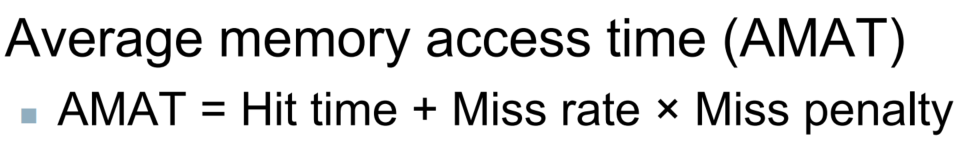
由上式可知，优化cache的方式大概可以从两方面入手：（1）降低miss rate（2）降低miss penalty
（三）增加cache的相连度
上面我们讨论的都是直接映射的cache形式，即一个数据块在cache中对应一个位置。这种Memory-cache的映射方式会导致cache的冲突经常发生（因为多个Memory block会对应同一个cache block），cache miss rate较高。直接映射只是映射的一个特例。
1.全相连
另一个特例是全相连，即Memory中的每个数据块和cache中的任意表项都可以关联。在寻找Memory 中的数据块对应的cache时，会在硬件层面设计一组比较器并行比较所有的cache表项。这种比较器增加了硬件开销，使得全相连策略只适用于小容量的cache。
2.组相连
介于直接映射和全相连之间的是组相连策略。每个数据块对应n个cache块中，称为n路组相连cache。在访问cache时会根据Memory中的数据块的索引位映射到对应的组（set）中，数据块存放在组中的一个位置（按照最近最少使用选定）。提高相连度可以提高命中率，但是也会造成命中时间增加。组相连是目前cache比较主流的结构。
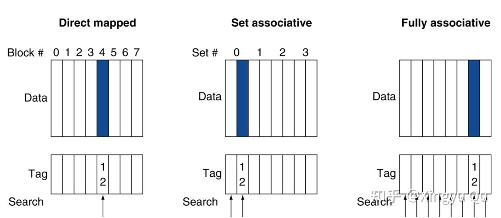
（1）在cache中查找数据块
说明组相连cache的查找：以4-way组相连为例
跟上一节相同，Address被解析为Tag+Index+byte offset的格式，首先根据index匹配到对应的组，然后根据tag与组内每个项进行匹配（比较器hardware并行）。最后根据byte offset取到对应的字节数据。
（2）选择替换的数据块
在组相连中出现cache miss时（这时候组中所有表项都被占满），需要选择一个表项替换填入。
最常用的策略是使用最近最少使用（Least Recently Used，LRU），被替换的数据是最长时间未被使用的，这种设计的思想源于局部性原理。这种策略可以通过跟踪某个数据块相对于同组内其他数据块的使用时间来实现。
（四）多级cache架构
现代计算机是多级cache的架构，这种架构可以减小现代处理器高速时钟频率与访问DRAM所需的不断增长的延迟之间的差距。
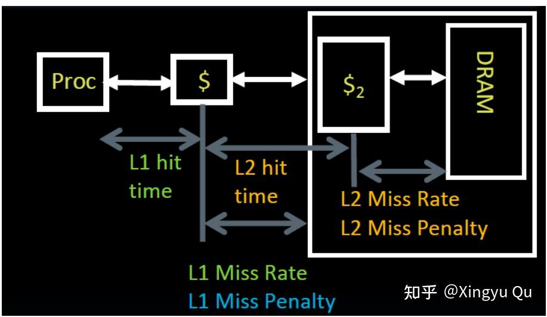
如上图所示，L2-cache的大小大于L1-cache，L1-cache的miss penalty就是L2-cache的access time。相比于L1-cache，L2-cache会采用更大的数据块和更高的相连度，来降低失效率。
（五）虚拟存储——广义的"cache"
在前面的内容中我们关注cache如何对程序中最近访问的代码和数据提供快速访问。同样，主存（Memory）可以充当磁盘（disk）的"cache"。这种技术叫作“虚拟存储”。
1.动机
回溯历史，提出虚拟存储的动机主要有两个：（1）允许在多个程序之间高效安全地共享内存 （2）消除小而受限的主存容量对程序设计造成的影响
多个程序同时运行时，OS会保证他们的程序地址相对隔离，虚拟存储实现了将程序地址转为物理地址。这种地址转换处理加强了各个程序地址空间的保护。
由于内存容量有限，程序员可能需要把程序划分为很多段，把它们标记为互斥的，并在执行时加载对应的程序段，保证加载的大小不超过内存。这对于程序员来讲是很大的负担，虚拟存储可以自动管理主存和辅存所代表的两级存储层次结果。
2.地址转换
虚拟存储块称为页，虚拟存储失效被称为缺页失效。处理器产生一个需要访问的虚拟地址，该地址通过硬件转换为一个物理地址，物理地址可以访问主存。即一个虚拟内存的页映射到一个物理内存的页。当然如下图所示，虚拟内存的页也可能不在主存中，因此不能映射到一个物理内存页上，这个时候对应的页存储在磁盘上。
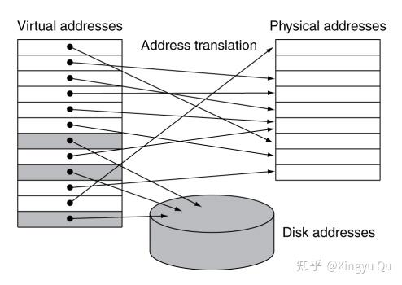
在虚拟存储中，地址被划分为虚拟页号（VPN）和地址偏移（Page Offset）。在映射的过程中，虚拟页号需要转换为物理页号；页内偏移不变，它决定了页的大小。（图中12位Page Offset即为 2^{12}B , 4KiB）
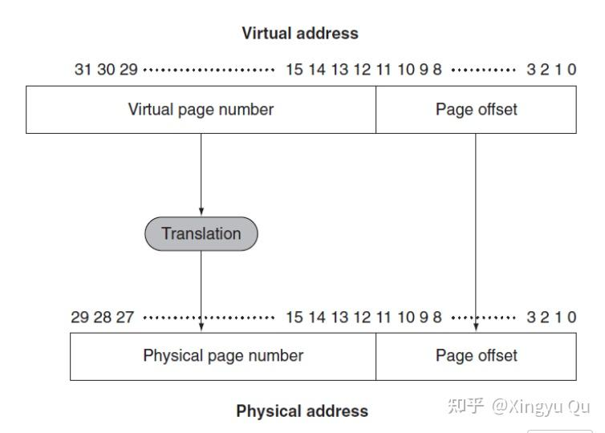
由于磁盘的缺页失效需要浪费数百个周期，所以设计虚拟存储系统时：
（1）页应该足够大来降低失效率；应该采用全相连策略来降低失效率
（2）应该采用写回策略（写穿透策略访问贮存时间太长）
（3）应该优化页的放置来降低失效率
3.页的存放和查找
正如在cache学习中我们所看到的，全相连的模式困难在于访问时的查找，需要一一比对，耗时太长。所以在虚拟存储中使用一个索引主存的表来定位页，这个结构称为页表，被存在主存中。
页表使用虚拟页号作为索引，找到相应的物理页号。每个程序的页表是独立的，将程序的虚拟地址空间映射到物理内存（Memory）。页表也是需要查找的，为了表明页表在内存中的位置，硬件中设置了一个页表寄存器，记录了页表的首地址。
正如我们在cache中所做的一样，每个页表项需要用一位有效位来标记内容是否有效。由于页表包含了每个可能的虚拟页的映射，因此不需要标签。
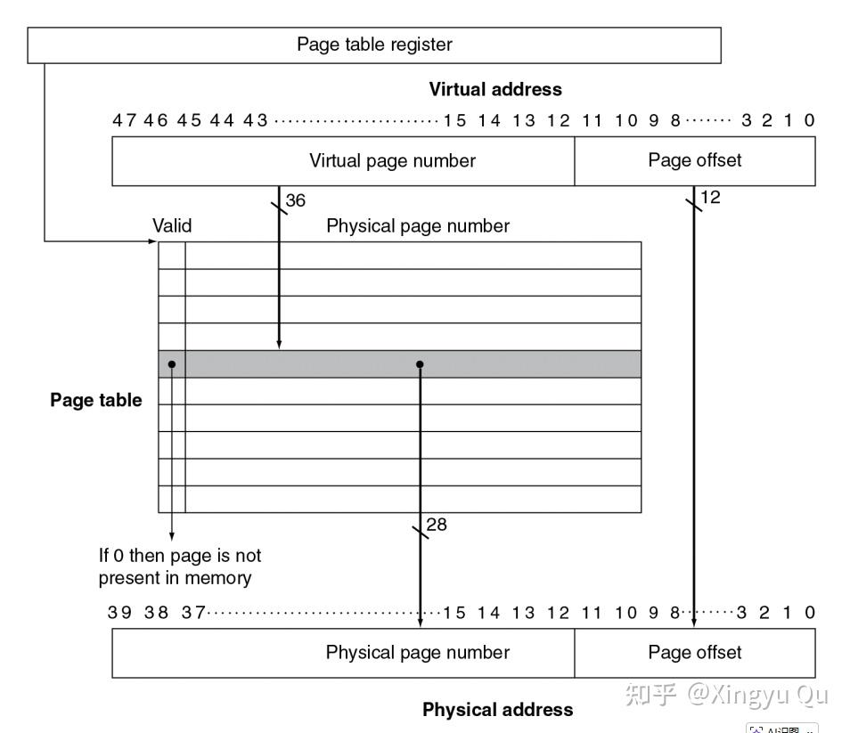
4.缺页失效
如果虚拟页的有效位为0，则会发生缺页失效，操作系统通过例外获得程序控制。发生缺页失效意味着需要在磁盘中寻找这块内存，因此在虚拟存储系统中，必须跟踪记录虚拟地址空间的每一页在辅存中的位置。 操作系统会在创建进程时为每个页面在闪存或磁盘上创建空间，同时创建一个数据结构来记录每个虚拟页在磁盘上的位置。该数据结构可以与页表合并，也可以单独存放（但它们的结构类似）。
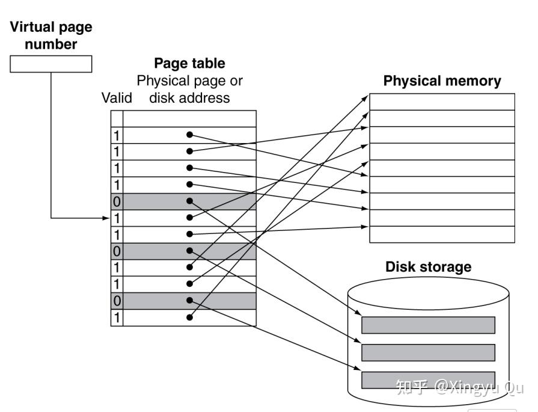
当虚拟页号（VPN）检索页表时，如果valid=1，就索引到Physical Memory的表项上；反之，就索引到Disk Storage的表项上。Memory和Disk上的页大小是相等的。
操作系统还会创建一个数据结构用于跟踪记录使用每个物理地址的是哪些进程和哪些虚拟地址。发生缺页失效时，操作系统会使用近似最近最少使用算法（LRU）来决定替换哪一个页。为什么是近似呢？因为在这里执行完全的LRU算法的代价过高，每次存储器访问时都需要更新数据结构。
为了帮助操作系统估算最近最少使用的页，每一个页设置了一个引用位（reference bit），当每一页被访问的时候置为1，操作系统定期将这些位置0，然后再更新，这样就可以判断最近哪些位被访问过。
5.关于写操作
写入采用写穿透策略时，向磁盘写入可能需要数百万个处理器时钟周期；因此，虚拟存储系统必须使用写回策略，允许写穿透方式对磁盘进行写的方法是完全不可行的。
由于磁盘的访问时间大于传输时间，因此将整个页复制回磁盘的效率优于将单个字写回。将单个字暂时存在缓存系统中，而非立即写回磁盘，利用缓存的 “暂存 + 批量写回”，减少磁盘传输次数，提升效率。我们向页表中添加一个“脏位”（dirty bit），当一页中的任何字被写入时，该页在内存中的副本会与磁盘中的原数据不一致，此时该页被标记为 “脏页”。
6.使用TLB加快地址转换
由于页表存储在主存中，程序中每个访存请求都至少需要两次访存：第一次访问获得物理地址，第二次访存获得数据。利用页表访问的局部性，我们设计一个特殊的cache系统，称为快表（TLB）。它支持虚拟页号不经过页表直接访问物理存储。
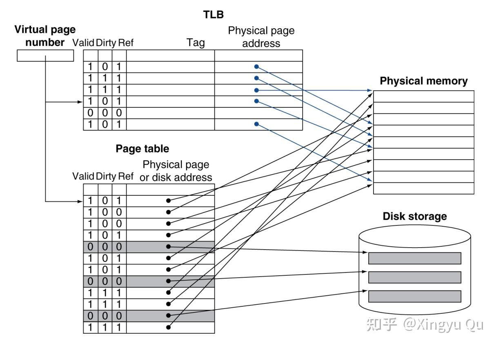
每次引用时，在TLB中查找虚拟页号。如果命中，则使用物理页号形成地址，相应的Ref位被置位。如果处理器要执行写操作，那么Dirty位也被置位。如果TLB miss，会继续查询页表判断页是否在Memory中，如果在Memory中，处理器可将页表中的地址转换加载到TLB中，并重新执行访问来处理失效。如果页表显示不在Memory中，则会触发例外。
当替换TLB表项的时候，需要将引用位和脏位复制回对应的页表项。因为我们期望的TLB的miss rate很低，所以采用写回策略是很好的选择。
以下是cache, TLB, Page Table是否miss可能的情况，请读者自行理解:
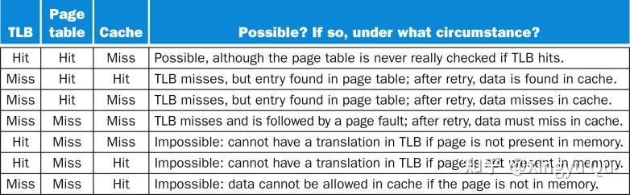
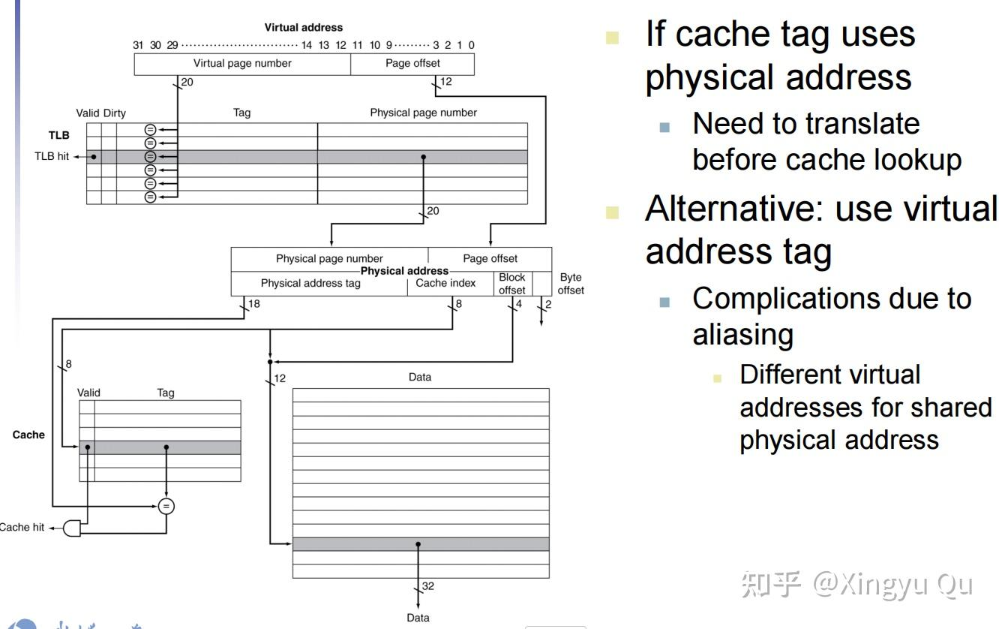
总结